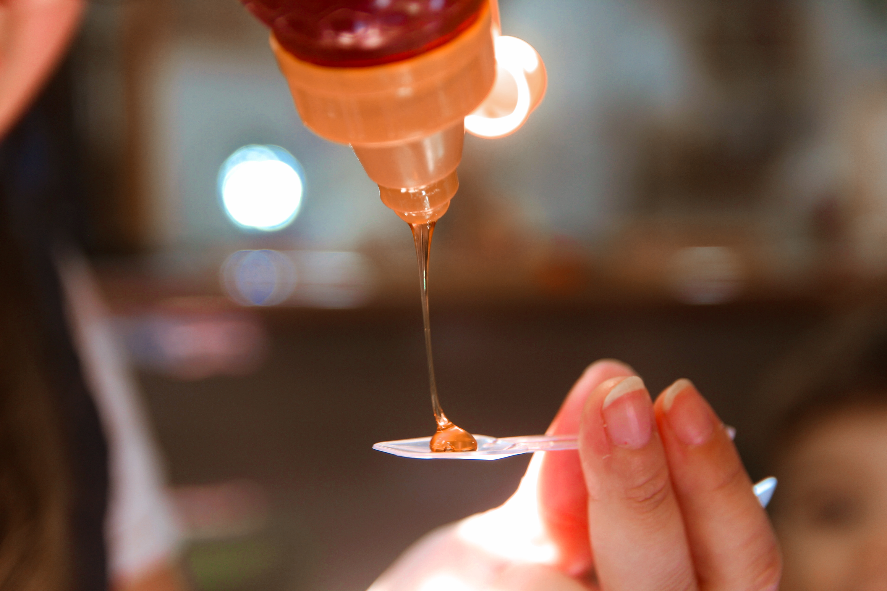
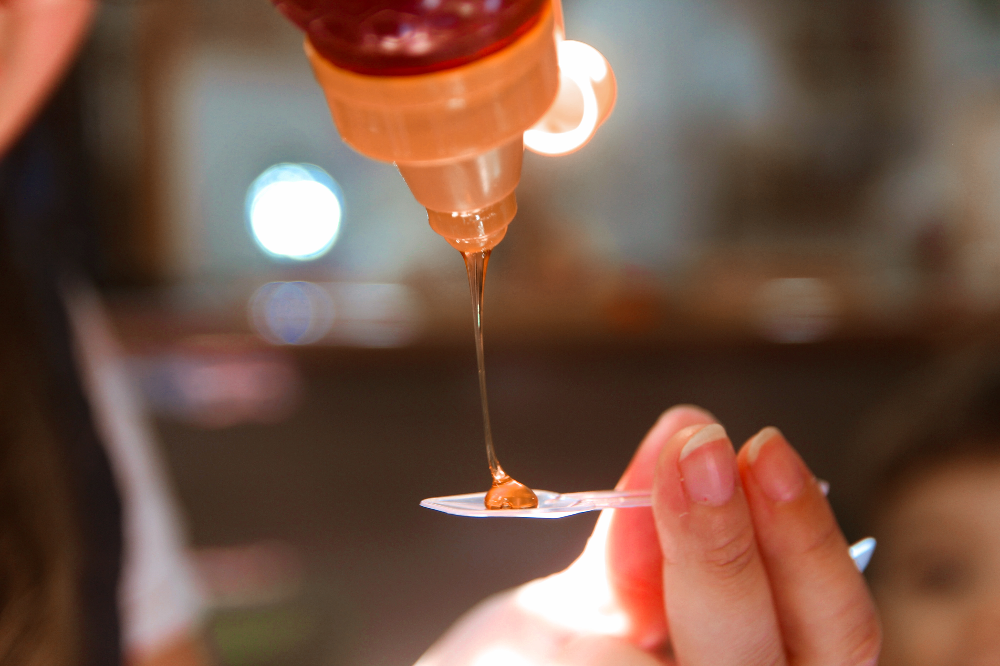
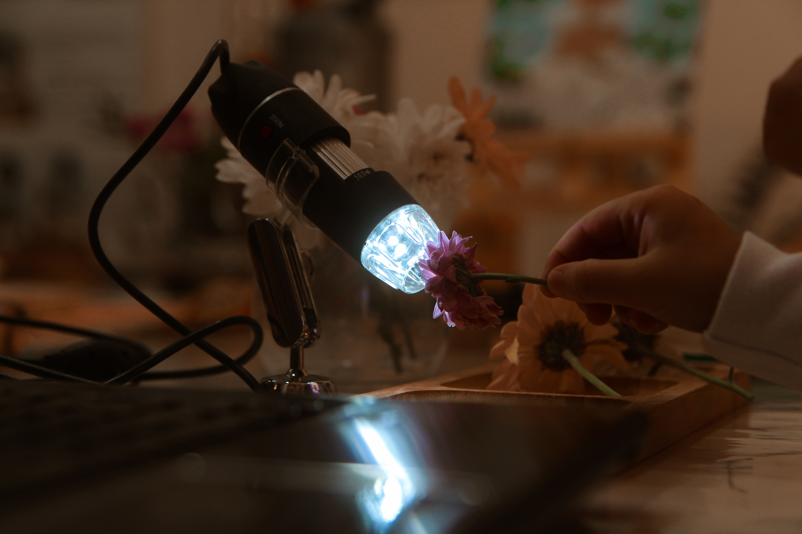
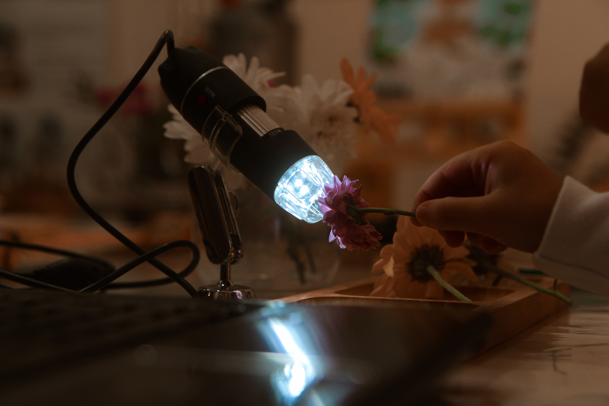

Com olhos curiosos e mente aberta, exploraram esse fascinante inseto polinizador.
Crianças exploraram as abelhas com curiosidade, aprendendo sobre sua importância e a interação com as flores. Observaram atentamente as abelhas, aprendendo sobre sua importância para o meio ambiente e a produção de mel. O ensaio fotográfico despertou amor pela natureza, estimulando a consciência ambiental das crianças. Cada imagem conta uma história única, revelando a magia e a beleza das abelhas em nosso mundo.
 

 
